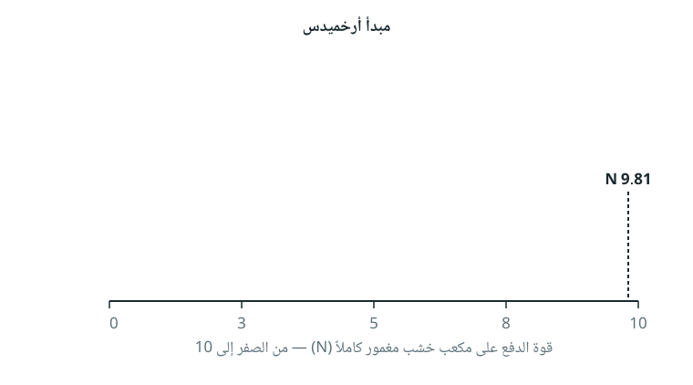

مبدأ أرخميدس
Archimedes' principle
مبدأ أرخميدس يقول إن الجسم المغمور في مائع يتعرض لقوة دفع إلى الأعلى تساوي وزن المائع المزاح: F_b = ρ_fluid·g·V_displaced. يُفسّر طفو السفن وانغمار الأجسام، وأساس قياس الكثافة بالميزان الهيدروستاتي.
حين يُغمر جسم في مائع، يزداد الضغط مع العمق، فيكون الضغط على السطح السفلي أكبر منه على العلوي. ومحصلة هذه الفروق قوة إلى الأعلى تساوي وزن المائع الذي كان يشغل حجم الجزء المغمور. فإذا كان وزن الجسم أقل من قوة الدفع طفا، وإذا كان أكبر غرق، وإذا تساويا بقي معلقاً في أي عمق. مثال: مكعب خشب حجمه 1.00×10⁻³ m³ وكثافته 600 kg/m³ في الماء: وزنه 5.89 N، وقوة الدفع عند الغمر الكامل 9.81 N، فيطفو مغموراً بنسبة 600/1 000 = 60% من حجمه.
كيف تعمل الظاهرة؟
الضغط في مائع ساكن يزداد مع العمق وفق p = ρgh. فعلى السطح السفلي لجسم مغمور يكون الضغط أكبر منه على السطح العلوي بمقدار ρg·h حيث h ارتفاع الجسم. ومحصلة قوى الضغط على كل الأسطح تساوي فرق الضغط مضروباً في المساحة الأفقية، أي ρg·h·A، وهو ما يساوي ρg·V لأن h·A هو الحجم. ولهذا لا تعتمد قوة الدفع على شكل الجسم ولا على مادته، بل على حجمه المغمور وكثافة المائع فقط.
العلاقة بالأرقام
F_b = ρ_f·g·V_d، والطفو يحدث حين ρ_جسم < ρ_مائع، ونسبة الغمر = ρ_جسم/ρ_مائع. مثال: خشب 600 kg/m³ في ماء 1 000 kg/m³ → نسبة الغمر 0.60، أي 60% من الحجم تحت السطح. وللجليد 917 kg/m³ في ماء البحر 1 025 kg/m³ → نسبة الغمر 0.895، أي 89.5%، ولهذا يظهر 10.5% فقط فوق سطح الماء. ولو غُمر جسم حجمه 1.00×10⁻³ m³ كاملاً في ماء: F_b = 1 000 × 9.80665 × 1.00×10⁻³ = 9.807 N.
مفاهيم متقاربة
يُفرَّق بين قوة الدفع والوزن الظاهر: الوزن الظاهر = الوزن الحقيقي − قوة الدفع، وهو ما يقيسه الميزان تحت الماء. ويُفرَّق بين الطفو في مائع ساكن والحركة في مائع متحرك، حيث يضاف تأثير السرعة. ويُفرَّق بين الكثافة المتوسطة والكثافة الحقيقية: سفينة من حديد تطفو لأن كثافتها المتوسطة مع الفراغات أقل من الماء. وأخيراً يُفرَّق بين مبدأ أرخميدس وقانون الطفو للغازات: القانون نفسه، لكن كثافة الغاز أقل بكثير فقوة الدفع أصغر.
حدود التطبيق
المبدأ يفترض مائعاً متصلاً ساكناً أو شبه ساكن، فلا يُطبَّق مباشرة في الجريان السريع حيث تتغير قوى الضغط الديناميكي. ولا يصف الأجسام التي تلتصق بالسطح بفعل التوتر السطحي عند الأحجام الصغيرة جداً، حيث تغلب قوى أخرى. ولا يُستعمل في الأوساط الحبيبية كالرمل حيث لا يسلك الوسط كمائع متصل. كذلك لا يعطي استقرار الطفو: جسم قد يطفو لكنه ينقلب، وذلك يحتاج حساب مركز الطفو ومركز الثقل.

| الكمية | القيمة | المصدر |
|---|---|---|
| قوة الدفع على مكعب خشب مغمور كاملاً | 9.81 N | [2] |
| كثافة التاج المقاسة | 16 155 kg·m⁻³ | [2] |
المصادر
- 1 CODATA Value: molar gas constant — NIST — CODATA 2022 recommended values (2024). physics.nist.gov/cgi-bin/cuu/Value?r · اطُّلع عليه 2026-11-21
- 2 University Physics Volume 1 — 14.4 Archimedes' Principle and Buoyancy — OpenStax, Rice University (2026). openstax.org/books/university-physics-volume-1/pages/14-4-archimedes-principle-and-buoyancy · اطُّلع عليه 2026-11-21
استشهد بهذا المصطلح
الصيغتان مبنيتان من بيانات الصفحة نفسها: العنوان والتاريخ ورابط النسخة المنشورة.
مبدأ أرخميدس — Archimedes' principle. (2026). ديوان المعرفة — انفراد. https://infiradev.com/diwan/terms/term-archimedes-principle.html
@misc{term-archimedes-principle2026,
title = {مبدأ أرخميدس},
titleaddon = {Archimedes' principle},
howpublished = {{ديوان المعرفة — انفراد} — مرجع علمي عربي},
year = {2026},
url = {https://infiradev.com/diwan/terms/term-archimedes-principle.html},
urldate = {2026-11-26},
note = {مراجعة علمية: hermes (مراجعة معتمدة 2026-11-26)}
}
راجعه: hermes (مراجعة معتمدة 2026-11-26) · 2026-11-26 · آخر تحديث 2026-11-21